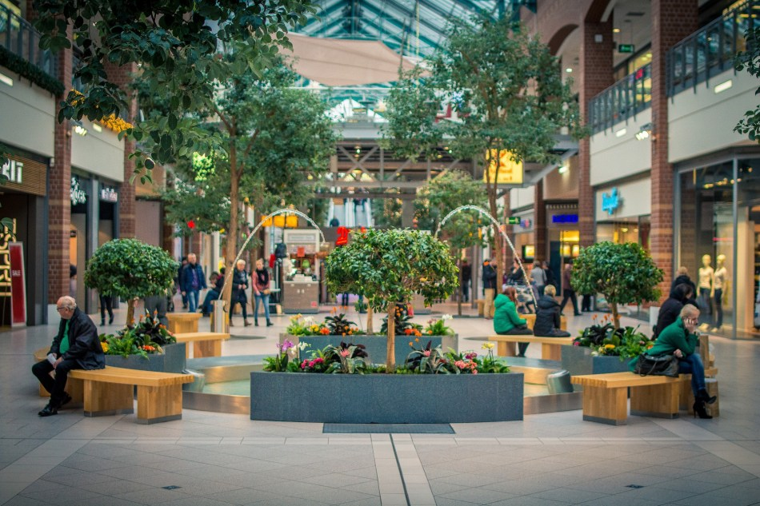
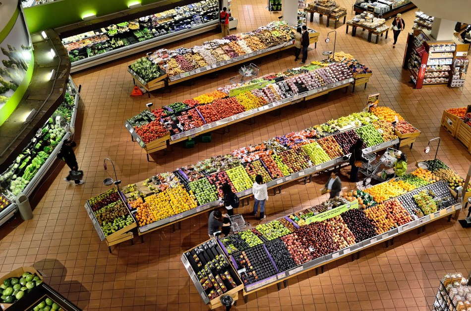

История крупных магазинов
Появление «масштабных» магазинов — с одной стороны, наследие ярмарок и стихийных рынков, существовавших с древних времен. С другой же — явление абсолютно постиндустриальное, связанное с широким распространением и доступностью автомобилей. Человеку больше не надо нести все покупки в руках, в лучшем случае, привлекая помощников — от слуг до домочадцев. Можно сесть в машину, приехать и купить все, погрузить в тележку.
Как ни странно, прообразы современных гипермаркетов существовали еще в XIX веке, хотя городские жители такими магазинами не пользовались, предпочитая обходить любимые лавки со знакомыми торговцами и небольшим количеством товара. Гипермаркеты предназначались для фермеров, живущих в деревнях.
Они приезжали на телегах, чтобы одним махом купить:
- продукты;
- инструменты для дома;
- строительные материалы;
- корм для животных;
- ткани.
И многое другое.
После чего фермеры возвращались домой, чтобы вернуться снова на рынок только спустя несколько недель. Конечно, им было удобнее закупаться на огромных площадках, похожих на склады. Продавцы же видели свою выгоду в возможности сбыть товар сразу оптом, по минимуму тратясь на аренду. Супермаркеты вошли в обиход значительно позже
Их родина — США, время рождение — конец 30-х годов прошлого века. А причина, по которой они возникли, стало изобретение тележки на колесиках. С тех пор людям не приходилось держать все выбранное в руках до самой кассы, а дальше можно было уже сесть в машину. Или вызвать такси.
В чем различия между супермаркетом и гипермаркетом?
И тот, и другой — крупные площадки-магазины, в которых продаются различные товары. Общее у обоих типов — самообслуживание, то есть, предполагается, что клиент приходит, берет тележку и ходит по рядам, выбирая необходимые вещи. Пожалуй, это единственное очевидное сходство, потому что дальше начинаются различия между типами магазинов.
Размеры
«Гипер» — это больше, чем «супер». Так оно и есть. Супермаркет редко превышает площадь 2500 квадратных метров, тогда как самые крупные гипермаркеты могут достигать впечатляющих 6 гектаров. Это целый крупный район!
Кстати, чтобы человеку было проще ходить по такой огромной площади, некоторые современные гипермаркеты помимо традиционных тележек предлагают и своего рода мини-кары. Садишься, едешь, как на машине.
Особенности территории
Гипермаркеты слишком велики, чтобы в них добавляли что-то еще. С другой стороны, поскольку в такой огромный магазин до сих пор приезжают закупаться если не на целый день, то на несколько часов, то обязательно присутствуют свои закусочные, места отдыха, брендовые фудкорты.
Ассортимент
Если вы зайдете в супермаркет, обнаружите там продукты на все случаи жизни — от мяса до кондитерских изделий. Также найдете товары первой необходимости, гигиенические принадлежности, моющие средства. Обычно больше ничего нет. Гипермаркет предлагает более широкий спектр товаров, среди которых:
- продукты питания, напитки;
- косметика;
- бытовая химия, товары для дома;
- фермерские товары — рассада, лопаты, даже машинки для стрижки газонов и снегоуборочная техника;
- бытовая техника;
- детские товары;
- одежда и обувь.
В гипермаркете можно найти практически все, что угодно — от кошачьего корма до автозапчастей. Принцип, оставшийся с XIX века, сохраняется и поныне: приехать в один магазин и закупиться сразу всем.
Представление товара
Считается, что гипермаркеты созданы для небогатых людей, ниже среднего класса, которые привыкли экономить на покупках. Второй сегмент целевой аудитории — оптовые покупатели. Тем и другим не надо предлагать товар «лицом», важно сделать его дешевым и позволить приобрести сразу много.
Супермаркеты, хотя и бывают разного ценового сегмента, все-таки рассчитаны на более «премиальную» категорию клиентов. Поэтому предлагаемые продукты моются, чистятся, никогда не продаются ящиками или в состоянии «только что выкопали из земли». Товарный вид и эстетика, правильное расположение позиций на полках — целое искусство, за которым следит и сам супермаркет, и представленные в нем бренды.